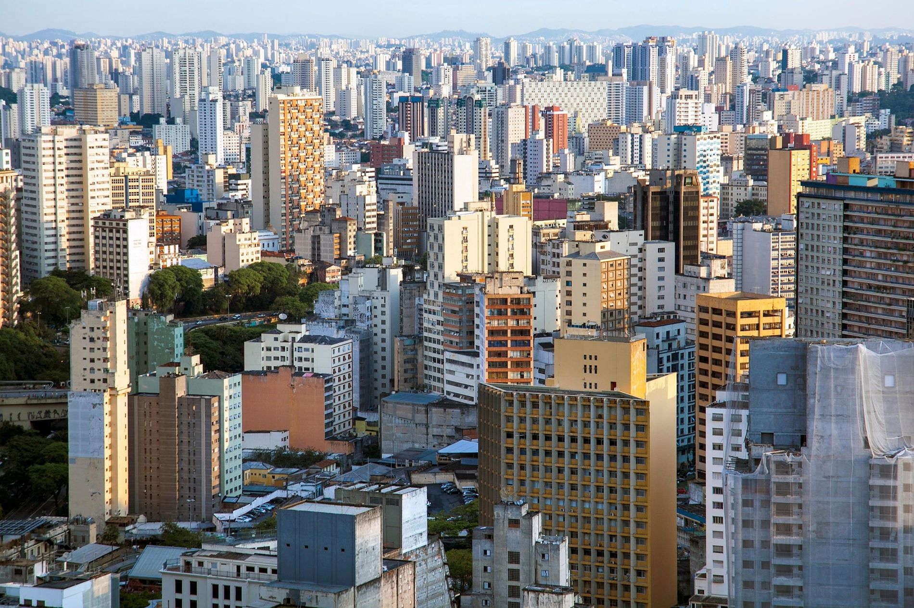

Trabalho Agrinho
Trabalho Agrinho: "Relação entre cidade e campo"

Qual a relação entre campo cidade? È de interdependência, onde cada um depende do outro para prosperar. O campo fornece alimentos e matéria-prima para a cidade e a cidade oferece tecnologia, mercado consumidor e serviços para o campo.
2° trimestre